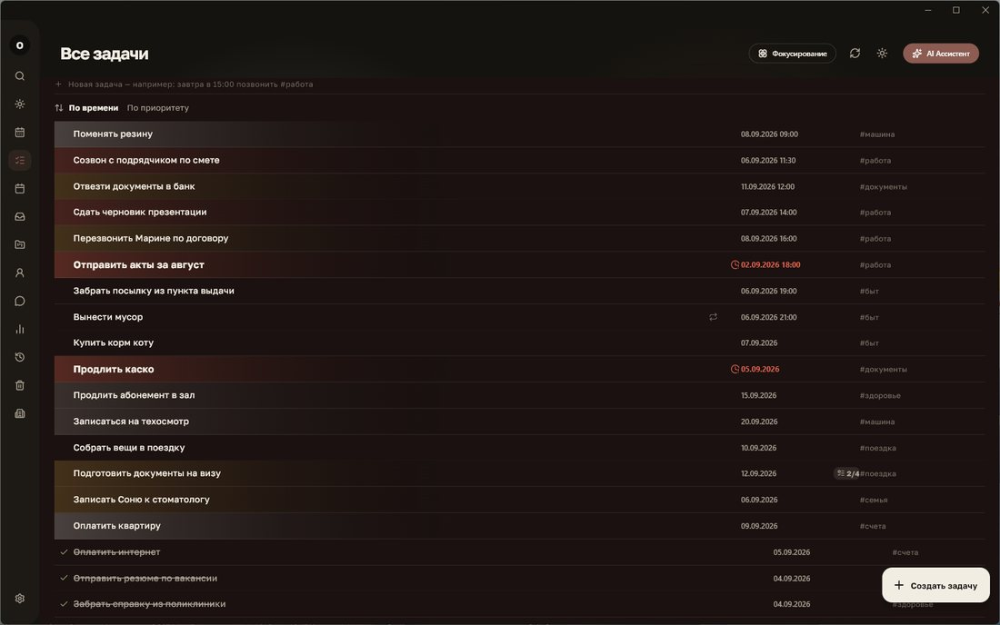
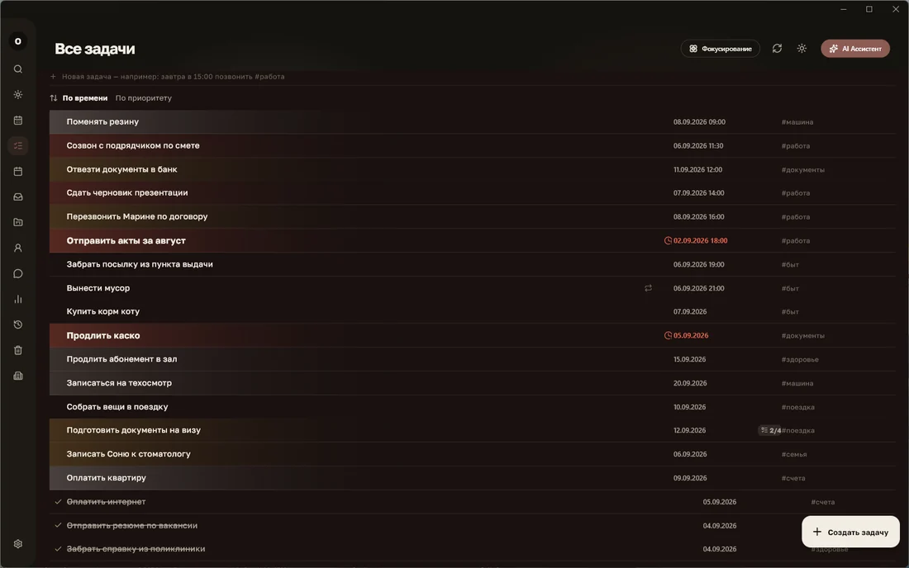
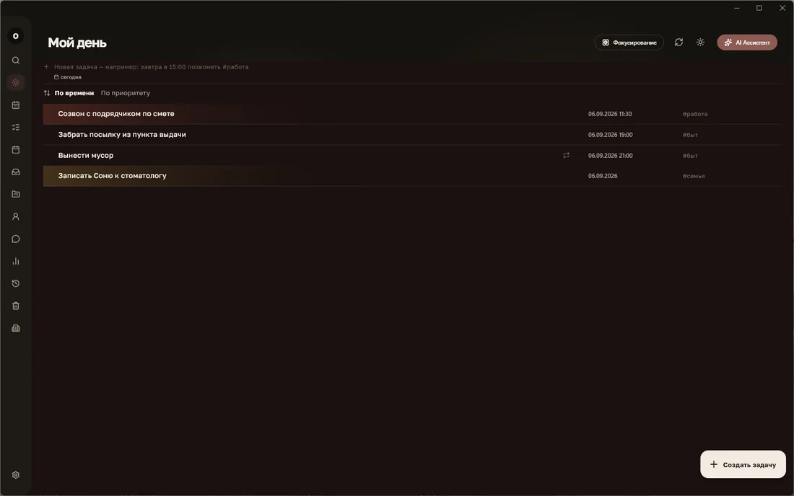
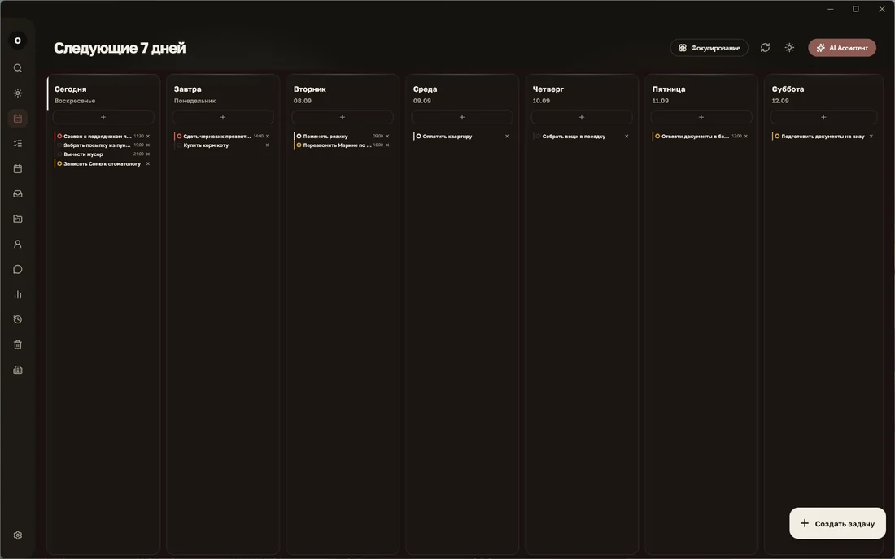
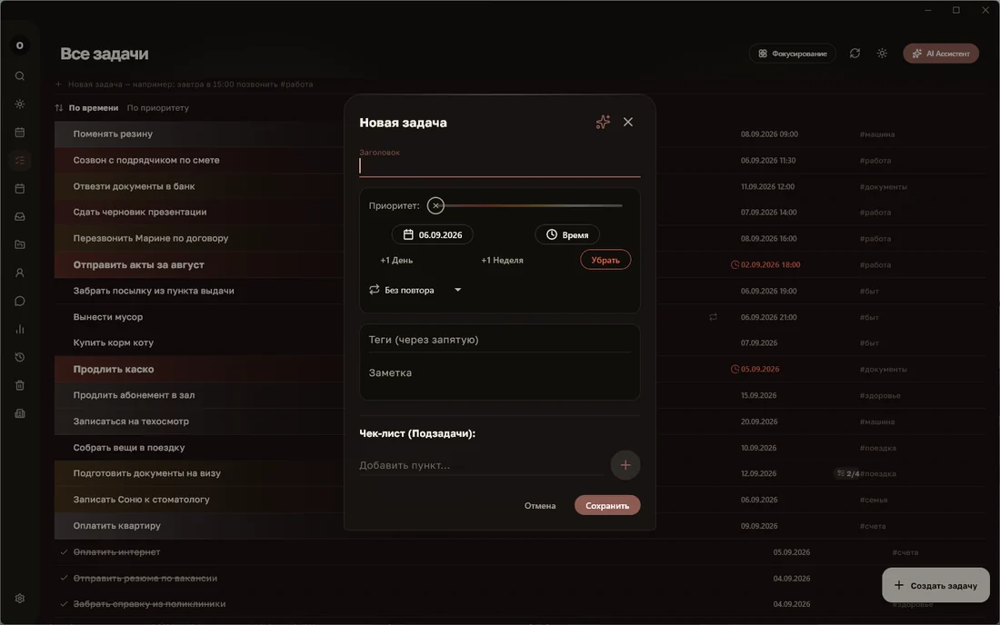
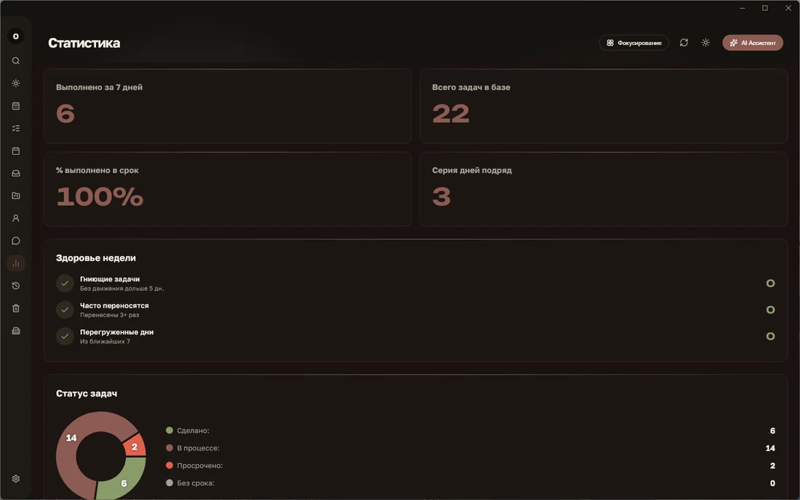
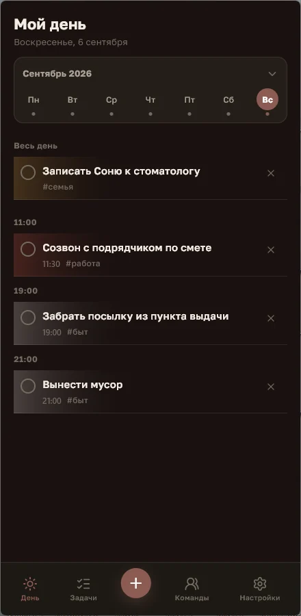

Пишите дела так, как говорите
Clarify разберёт фразу на дату, время и метку сам. Работает на компьютере и в телефоне, в том числе без интернета.

Одна строка вместо анкеты
Записать дело должно занимать секунды, иначе его не запишут, а вспомнят, когда уже поздно. Наберите фразу целиком, поля заполнять не нужно.
Из фразы «завтра в 15:00 позвонить #работа» приложение достаёт дату «завтра», время «15:00» и метку «работа».
Голосом
Нажмите микрофон и скажите: «в пятницу забрать документы из школы». Разберётся так же, как текст.
Из переписки
Отправьте боту сообщение или голосовое — задача появится в приложении. Отметить сделанной можно прямо в чате.
По кругу
Мусор по вечерам, оплата в начале месяца. Задача возвращается сама, заводить её заново не нужно.
Видно, что застряло
Дела без движения неделями и дни, на которые записано больше, чем поместится. Clarify скажет заранее.
Как это выглядит
Снимки из рабочей сборки. Ничего не дорисовано.






В телефоне без установки
Откройте приложение в браузере и добавьте на главный экран. Дальше оно открывается отдельной иконкой. На телефоне свой экран дня, расписанный по часам.
- Задачи общие. Отметили на компьютере — через секунду отмечено и в телефоне.
- Без интернета тоже. Изменения копятся и уходят на сервер, когда связь вернётся.
- Бот рядом. Когда открывать приложение лень, задачу можно кинуть боту прямо из переписки.
До скачивания
Чтобы ничего из этого не стало сюрпризом после.
Windows 10 и 11
Версий для macOS и Linux нет. На них остаётся браузер.
Без прав администратора
Ставится в вашу папку пользователя. Рабочий компьютер не будет против.
Нужен аккаунт
Через Яндекс или по ссылке на почту. Без него задачам негде храниться.
Бесплатно
Подписки нет, оплаты внутри нет, рекламы нет.
Windows покажет синее окно. Так и должно быть
Так Windows встречает любую программу без платной цифровой подписи, а подпись стоит десятки тысяч рублей в год. Нажмите Подробнее, затем Выполнить в любом случае. Не хотите — откройте версию в браузере, там ничего скачивать не нужно.
Попробуйте на своих делах
Десяти минут хватит, чтобы понять, ваше это или нет. Если нет, удаляется обычным способом и ничего после себя не оставляет.
Скачать для Windows